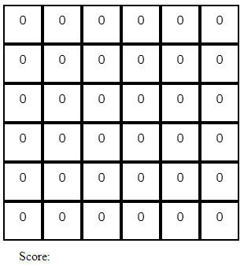
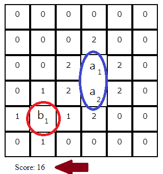
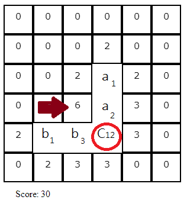

Lin2 ju1
Lin2 ju2 in Mandarin means neighbor.
This game is an (over-)simplified simulation of how human settlements take birth. Below are the rules and assumptions guiding the play.
- Any new member wants to live as close to other members of the colony as possible. So a vacant place close to many neighbors is more attractive than a vacant place in middle of nowhere.
- This attractiveness is denoted by the number of points for each location in the game. At the beginning when there are no neighbors, each location has attractiveness of zero.

- Each occupant raises the attractiveness by (number of neighbors + 1). For example in the figure below, occupant a1's neighboring locations have attractiveness of 2 since it has one neighbor. Similarly occupant b2's neighbors have attractiveness of 1 since it has no neighbors. The score at the bottom is the sum of attractiveness of all empty spots.

- Only characters of the same category can by neighbors. In the figure above, a1 and a2 can be neighbors while a1 and b1 can't be. The definitions of 'category' is defined in the game itself.
- There are exactly three categories in each game with four characters in each category. In addition, there are two characters which belong to exactly two categories. In the figure below, character C12 belongs to the categories same as a1 and b1. That's why it can be neighbors with both.

Aim:Your aim is to recognize the category of each character and create a colony of characters in a way so as to MAXIMIZE THE ATTRACTIVENESS of the whole arena. In other words, the higher the score, the better.
Below is the snapshot of a completed game with a score of 61. Try to score higher than 70 (and then higher than 75).